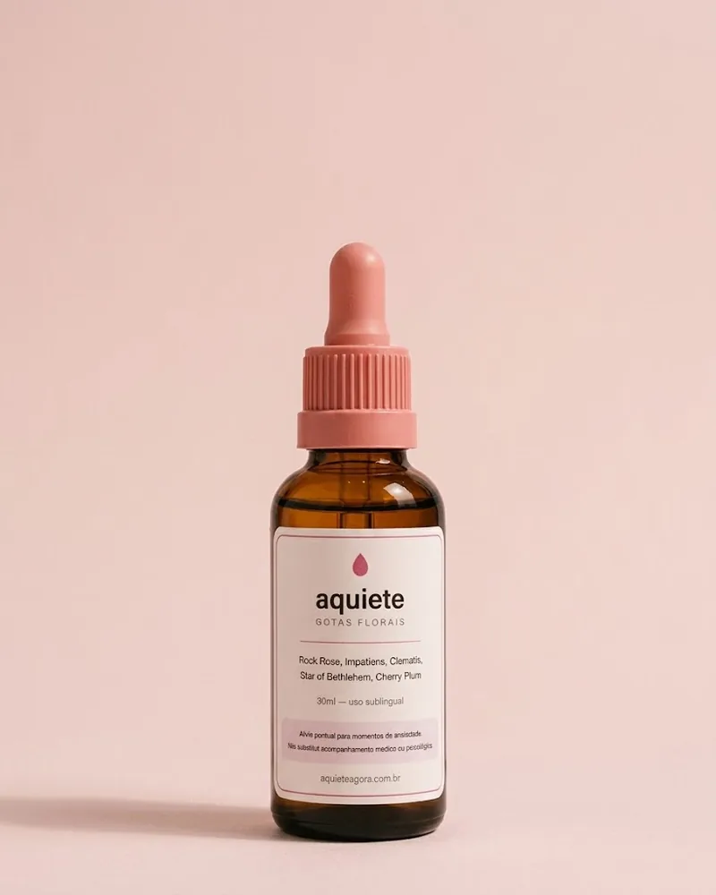
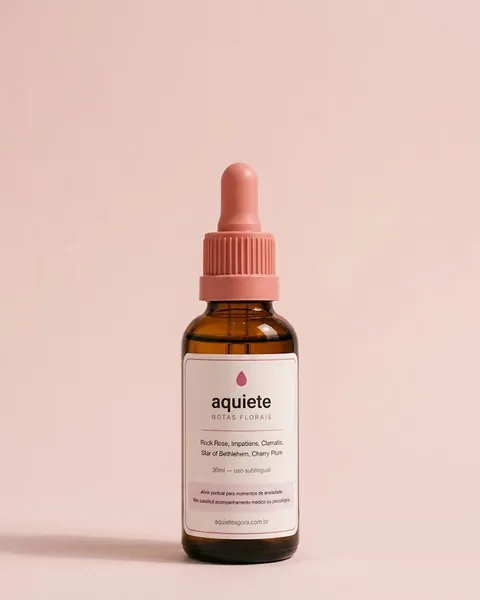
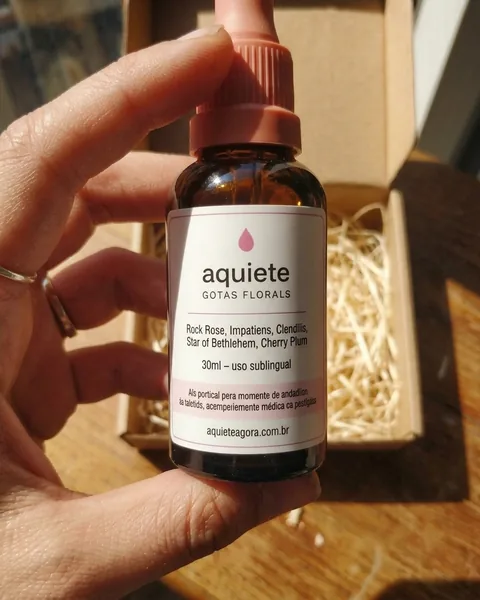
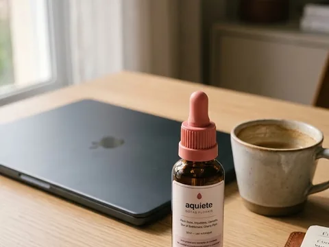
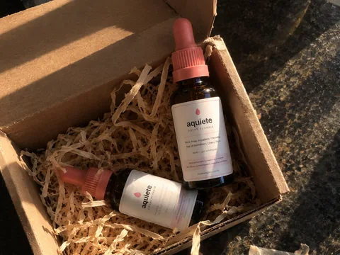
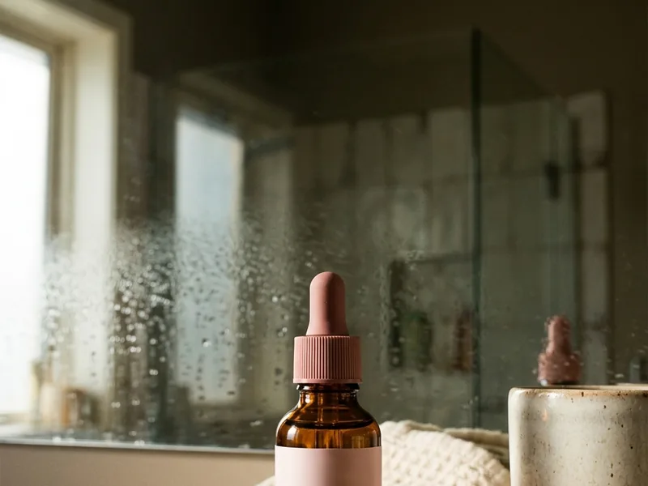
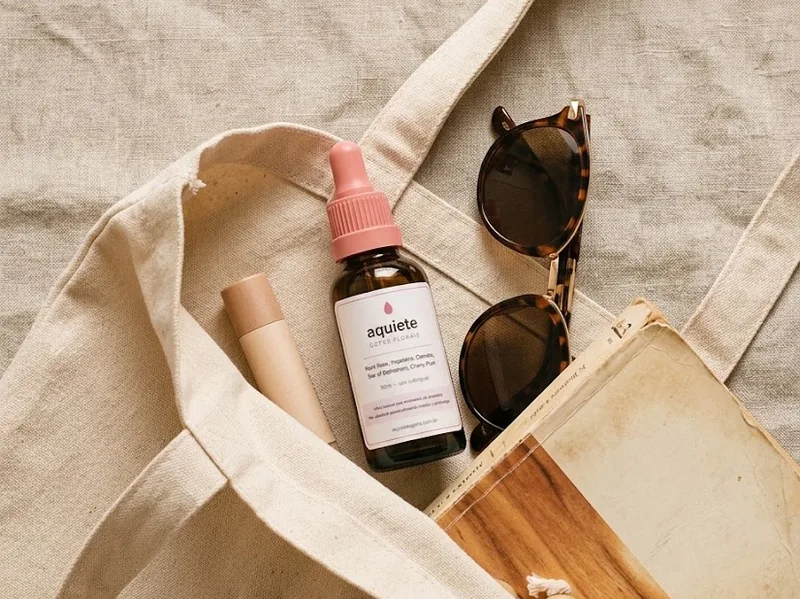
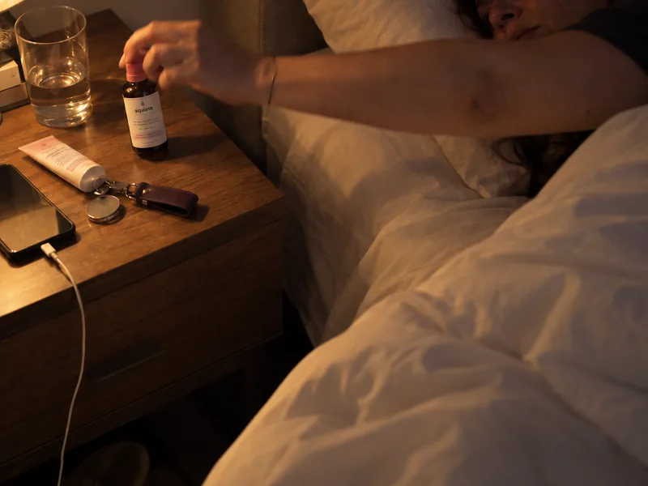

Diego M.Campinas, SP · usa há 6 semanas
“Chegava na reunião de segunda com a mão gelada. Pingo no estacionamento antes de subir e entro na sala inteiro. Mudou minha semana.”
COMPRE 1, LEVE 2 com frete grátis · termina hoje em





A via sublingual absorve rápido, e a maior parte das pessoas percebe diferença nos primeiros minutos. O corpo de cada um responde no seu tempo, e por isso você tem 30 dias pra testar sem risco nenhum.
Quatro gotas embaixo da língua no momento em que precisar. Não precisa de água, não precisa engolir e dá pra usar no meio de gente, sem sair do lugar. Pode repetir ao longo do dia, seguindo o rótulo.
Você tem 30 dias a partir do recebimento pra devolver e receber de volta o valor pago, sem formulário e sem justificativa. A única condição é o frasco estar lacrado, porque produto manipulado aberto não pode voltar pro estoque.
Seu pedido sai em até 2 dias úteis depois que o pagamento é aprovado, com código de rastreio. O prazo de entrega depende da sua região e aparece no checkout antes de você finalizar.
Depoimentos de quem já carrega no bolso
Aquiete · Composto floral de Bach em gotas
Pra quando aperta e você precisa de alguma coisa ali, na hora:No compre 1, leve 2 você leva dois frascos por R$ 129,90, com frete grátis. Chega em casa, vai pra bolsa, e da próxima vez que a crise chegar você tem o que fazer.
Envio em até 2 dias úteis
Quero o compre 1, leve 2Pix, cartão ou boleto · compra seguraPagamento seguro Frete grátis a partir de 2 Garantia de 30 dias

“Chegava na reunião de segunda com a mão gelada. Pingo no estacionamento antes de subir e entro na sala inteiro. Mudou minha semana.”
“Já tinha tentado chá, respiração, meditação. O Aquiete foi o único que agiu na hora — pingo no trânsito e o peito abre em minutos.”
“Comprei o kit de 4: um no carro, um na bolsa, um na cabeceira — e um pra minha mãe, que amou tanto quanto eu.”
Marque o que acontece com você e descubra em 30 segundos.
O quanto o seu corpo fica em alerta
Marque os sinais acima
Quando a crise chega, o corpo já disparou: coração acelera, respiração encurta, a mão esfria. Nada disso espera meia hora — e é por isso que o alívio também não pode esperar.
Uma reunião, um trânsito parado, um lugar cheio. O corpo entende como ameaça e liga tudo de uma vez, sem pedir licença.
Chá pede água quente e vinte minutos. Respiração pede um canto e lembrar a técnica. Consulta pede agenda. Tudo pede tempo que, naquele instante, você não tem.
O Aquiete é um composto floral de Bach em gotas sublinguais. Quatro gotas embaixo da língua, no lugar onde você estiver, sem água e sem sair da sala. A via sublingual absorve rápido, e é isso que faz dele uma resposta pra agora e não pra depois.

Pela via sublingual, sem precisar de água, sem engolir e sem esperar o efeito chegar lá na frente.

Frasco de 30 ml com conta-gotas de vidro. Cabe na bolsa, no bolso, no porta-luvas e na gaveta do trabalho.
Quatro gotas embaixo da língua. Sem tarja, sem receita e sem substância que gere tolerância ou abstinência.

Você usa no momento em que aperta e para quando quiser, sem desmame. Pode repetir ao longo do dia, seguindo o rótulo.
Histórias de quem passou a ter o que fazer quando a crise chega.
“Tô usando faz umas 6 semanas e minhas crises ficaram muito mais leves. Não tenho mais aquele aperto horrível no peito.”
“Tô usando há 3 meses e é o que eu pego na hora que o coração dispara. É super fácil de usar.”
“Chegava na reunião de segunda com a mão gelada. Pingo no estacionamento antes de subir e entro na sala inteiro. Mudou minha semana.”
“Já tinha tentado chá, respiração, meditação. O Aquiete foi o único que agiu na hora — pingo no trânsito e o peito abre em minutos.”
Manipulado em lotes, com rótulo próprio e número de lote impresso.
Cada frasco sai com o lote e a validade escritos, pra você conferir.
Essências florais usadas desde os anos 1930, em composto sublingual.
Frasco lacrado, sem formulário e sem justificativa. O risco é nosso.
Sem açúcar Sem corante Sem glúten Sem lactose Sem conservante artificial
Cinco essências florais, cada uma pensada pra um pedaço do momento da crise.
A essência do susto. Pro momento em que o medo chega de uma vez só.
Pra impaciência e a tensão de quem não consegue parar quieto.
Pra trazer de volta pro aqui quando a cabeça desliga do lugar.
A essência do baque. Pro que ficou preso depois de um susto.
Pra sensação de que você vai perder o controle do próprio corpo.
Essências florais são consideradas seguras e não têm interação farmacológica conhecida. O Aquiete não é medicamento e não substitui acompanhamento médico ou psicológico.
Tudo que você já tentou falha em alguma coisa. Ele é o único que passa em todas.
Sem preparo, sem água e sem sair de onde você está.
O frasco é de 30 ml, com conta-gotas de vidro. Rende cerca de 600 gotas, ou perto de 150 usos.
Direto embaixo da língua, no momento em que precisar. Não precisa de água e não precisa engolir.
Dá pra fazer no estacionamento, no banheiro do trabalho ou dentro do carro. Pode repetir ao longo do dia, seguindo o rótulo.
Um frasco dura cerca de dois meses e meio. A crise não avisa quando vem — ter o segundo em casa é o que evita ficar sem.
Pra experimentar
Cerca de 2 meses e meio de uso
R$ 89,90
R$ 69,99
+ frete de R$ 14,99
Economize R$ 19,91
O mais levado
Cerca de 5 meses de uso
R$ 64,95 por frascoR$ 179,80
R$ 129,90
ou em até 12x no cartão
Economize R$ 49,90 e não paga frete
Pra não ficar sem
Cerca de 10 meses de uso
R$ 49,97 por frascoR$ 359,60
R$ 199,90
ou em até 12x no cartão
Economize R$ 159,70 e não paga frete
Use por 30 dias a partir do recebimento. Se não servir pra você, é só pedir o reembolso e a gente devolve 100% do valor pago, sem formulário e sem justificativa. A única condição é o frasco estar lacrado, porque produto manipulado aberto não pode voltar pro estoque.
Não. O Aquiete não tem benzodiazepínico nem nenhuma substância que gere tolerância ou abstinência. Você usa quando precisa e para quando quiser, sem desmame.
A via sublingual absorve rápido, e a maior parte das pessoas percebe diferença nos primeiros minutos. O corpo de cada um responde no seu tempo, e por isso você tem 30 dias pra testar sem risco nenhum.
Essências florais são consideradas seguras e não têm interação farmacológica conhecida. Não dá sono, não vicia e não tem efeito colateral relatado. Se você tem alergia a algum componente, confira a composição no rótulo.
Pode, sem problema nenhum. Não há interação medicamentosa conhecida com essências florais: elas não competem com remédio nenhum no seu organismo. O Aquiete não entra no lugar do que você já toma. Ele é o alívio pro momento da crise, pra quando aperta e você precisa de alguma coisa ali, na hora.
Não, e não é pra isso que ele existe. O Aquiete não é medicamento e não substitui acompanhamento médico ou psicológico. Se você já faz tratamento, continue: ele entra como alívio pontual pro momento em que aperta.
Quatro gotas embaixo da língua no momento em que precisar. Pode repetir ao longo do dia, seguindo o rótulo. Um frasco de 30 ml rende cerca de 600 gotas, ou perto de 150 usos.
Se o lote tiver conservante à base de álcool, isso vem escrito no rótulo. Não tem açúcar, corante, conservante artificial, glúten nem lactose.
Pix com aprovação na hora, cartão em até 12x ou boleto. O pagamento é processado pelo Asaas: os dados do cartão são enviados direto pra eles e não ficam guardados com a gente.
Seu pedido sai em até 2 dias úteis depois que o pagamento é aprovado, com código de rastreio. O prazo de entrega depende da sua região e aparece no checkout antes de você finalizar.
Você pode fechar essa página e torcer pra próxima ser leve. Ou pode estar com ele no bolso quando ela vier.
Quero o compre 1, leve 2Pix, cartão ou boleto · compra segura30 dias pra devolver, frasco lacrado. Se não servir pra você, o prejuízo é nosso.